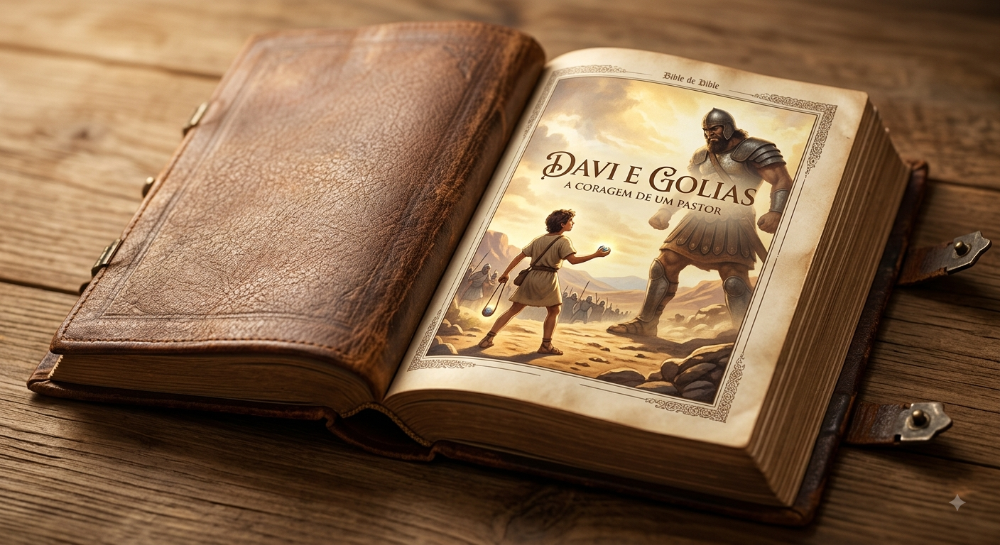

A Coragem de Davi
Por: Caio Felipe
A história de Davi e Golias é um dos maiores relatos de fé das Escrituras. Antes de enfrentar o gigante no campo de batalha, Davi já demonstrava fidelidade e coragem ao cuidar do rebanho de seu pai no campo, protegendo as ovelhas contra feras com a ajuda divina.
Enquanto todo o exército de Israel temia a força e o tamanho de Golias, Davi enxergou a situação com os olhos da fé. Munido apenas de sua atiradeira, cinco pedras do riacho e uma confiança inabalável, ele provou que a verdadeira vitória não depende de armaduras pesadas, mas do propósito e da presença de Deus.
Fonte: 1 Samuel 17 (Bíblia Online)